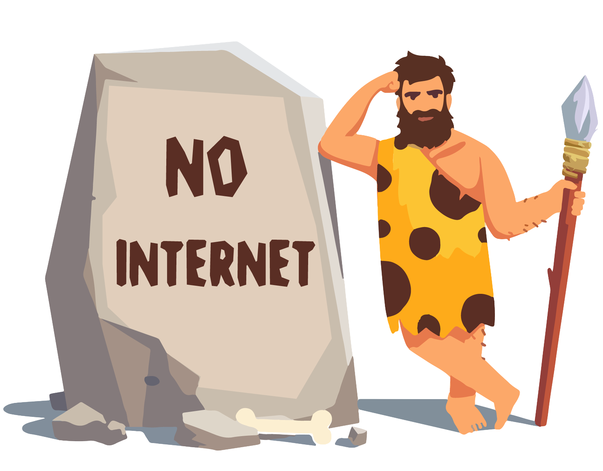

<div style="width: 100%;height: 100%;position: absolute;z-index: 100000; background-color: rgb(253, 253, 253);opacity: 1;">
    

  
  
    

    <button mat-raised-button color="warn" style="margin-left: 25%; width:50%"  (click)="retry()"> Retry</button>
</div>